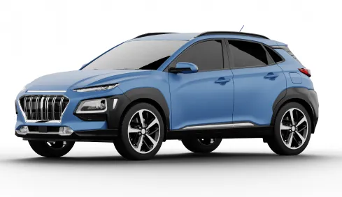
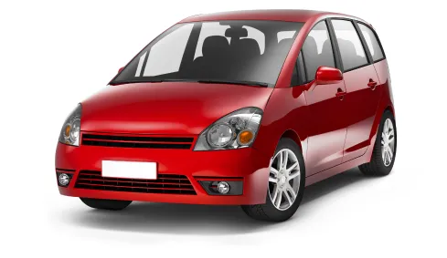

Sécurité
Profils vérifiés et trajets sécurisés
Économique
Partagez les frais de trajet et économisez
Écologique
Moins d'embouteillages, moins de pollution
Convivial
Rencontrez des personnes de votre quartier
Nzéla-Nzéla met en relation conducteurs et passagers pour des trajets sûrs, économiques et conviviaux entre quartiers.
Profils vérifiés et trajets sécurisés
Partagez les frais de trajet et économisez
Moins d'embouteillages, moins de pollution
Rencontrez des personnes de votre quartier
Trajets aujourd'hui
Quartier le plus actif
Conducteurs actifs
Note moyenne
Que vous cherchiez un trajet ou proposiez le vôtre, tout se passe en trois étapes simples.
Indiquez votre départ, votre arrivée et l'heure — ou publiez votre trajet en tant que conducteur en quelques secondes.
Choisissez un trajet qui vous convient et envoyez une demande. Le conducteur la confirme, et votre place est réservée.
Retrouvez-vous au point de départ, partagez le trajet et réglez votre part directement au conducteur.
Un trajet partagé, c'est plus économique, plus rapide et plus humain.
Profils vérifiés, pièce d'identité contrôlée et note visible avant chaque trajet.
Partagez le carburant avec d'autres passagers, jusqu'à 3 fois moins cher qu'un taxi.
Moins de véhicules sur la route, c'est moins d'embouteillages et moins de pollution.
Voyagez avec des habitants de votre quartier et créez de nouvelles connaissances.
Covoiturer, c'est simplement partager une voiture qui va déjà là où vous allez. Un conducteur propose les places libres de son véhicule, et des passagers du même quartier montent avec lui en partageant les frais d'essence.
Un conducteur publie son trajet — d'où il part, où il va, à quelle heure, et combien de places il a.
Un passager cherche un trajet qui correspond à son itinéraire, et demande une place.
Les deux voyagent ensemble et partagent simplement le coût du trajet — moins cher qu'un taxi, plus rapide qu'un bus.

Une berline confortable et spacieuse, idéale pour les trajets quotidiens et les longs déplacements.
Kintélé Poto-Poto
Départ 07:00
5 places restantes

Compacte et pratique, elle convient parfaitement aux déplacements en ville et aux trajets de courte distance.
Kintélé Poto-Poto
Départ 10:00
3 places restantes
Avant de monter dans une voiture, vous savez toujours qui conduit, avec quel véhicule, et ce qu'en pensent les autres passagers.
Chaque conducteur confirme son identité et son permis de conduire.
Marque, couleur et immatriculation visibles avant le départ.
Conducteurs et passagers se notent mutuellement, en toute transparence.
Trouvez un trajet dès aujourd'hui, ou proposez le vôtre et faites des rencontres dans votre quartier.